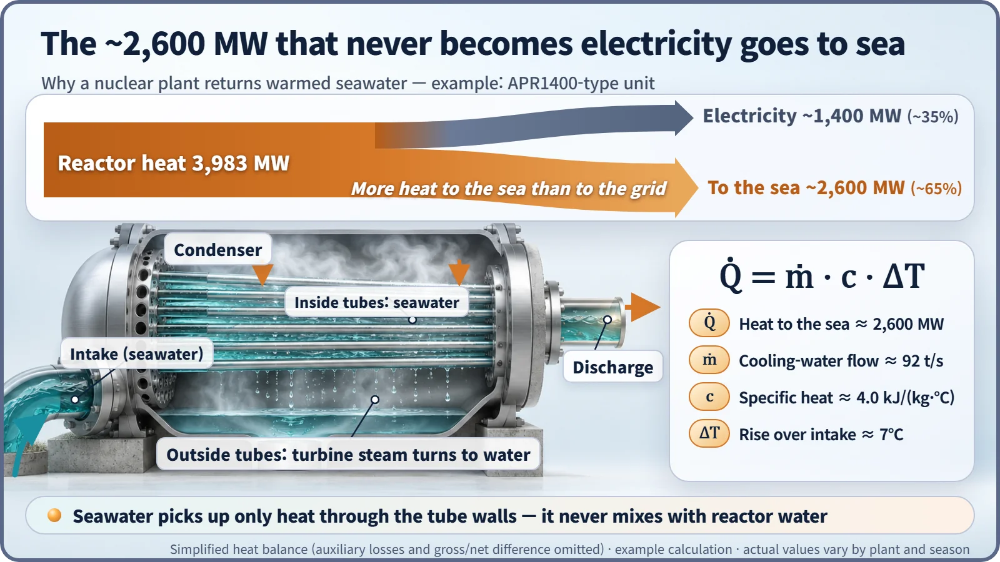
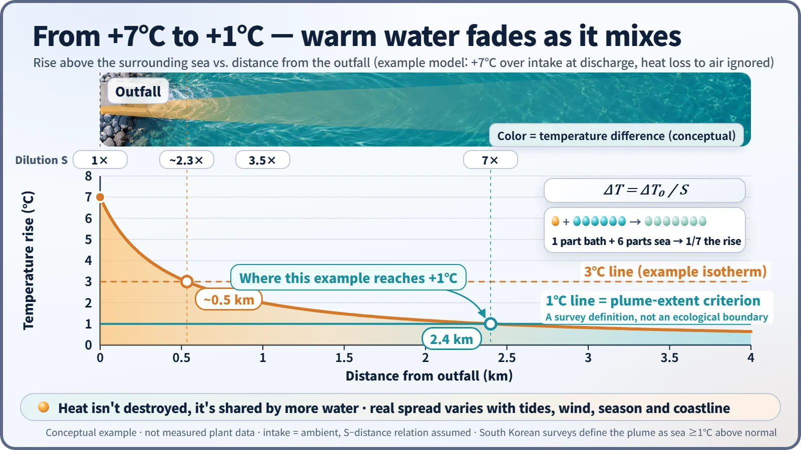

Society, Environment & the Future · 286
Like Bathwater Down a Stream — How Far Does a Nuclear Plant's Thermal Discharge Spread?
Heat that cannot become electricity leaves as warm seawater. It fades fast as it mixes, but how far it spreads, and who notices, depends on the place.
A nuclear plant can turn only about a third of its reactor heat into electricity, so the rest leaves as warmed seawater: thermal discharge. The issue is temperature, not radioactivity. The warm water fades quickly as it mixes into the sea, but how far it spreads depends on tides, wind, season and coastline, and its effects on marine life depend on place, season and species. [1]
Pouring bathwater into a stream
On a winter day near a coastal nuclear power plant, you can sometimes see fish crowding in front of the plant's outfall while the rest of the shoreline is quiet, and the anglers who know about it crowd in too. That water is warmer than the sea around it. This warm water is called thermal discharge: the cooling water a plant uses to cool its machinery and then returns to the sea, still warm.
Picture taking a bath in a cabin beside a stream and letting the warm bathwater run out into it. Right at the drain the water turns lukewarm; a few steps downstream it has mixed with the cold stream and is back to normal. Three things show here. The warmth fades quickly with distance. How quickly depends on the current and how much water the stream carries. And the minnows in the pool right below the drain definitely notice. Thermal discharge is the ocean version of these three points, although the sea is far more complicated, with tides flowing in and out and water spreading vertically as well as sideways.
Where does the heat that never becomes electricity go?
Heat from the reactor boils water, the steam spins a turbine, and then that steam must be turned back into water before it can make the next lap. The device that does this is the condenser, and the thing that carries the steam's heat away is seawater.
A heat engine can never turn all the heat it receives into work. That limit is set by the laws of thermodynamics, and a nuclear plant's efficiency is roughly 33–35%. Take South Korea's newer APR1400-type reactor: of the roughly 3,983 MW of heat the reactor produces, about 1,400 MW becomes electricity, and the remaining roughly 2,600 MW has to go to the sea.
The amount of seawater needed comes from a one-line formula:
Heat rejected = cooling-water flow × specific heat × temperature rise
Specific heat is the heat needed to raise 1 kg of water by 1 °C. With a temperature rise of 7 °C, the plant needs about 92 tonnes of seawater every second. It is a seesaw: for the same heat, more water means less warming, and less water means hotter water. At South Korean nuclear plants the discharge typically leaves around 7 °C warmer than the intake water (about 7–9 °C, depending on the plant and season). [2] [3]

| Quantity | Example value |
|---|---|
| Reactor heat output | about 3,983 MW |
| Electricity | about 1,400 MW (about 35%) |
| Heat sent to the sea | about 2,600 MW (about 65%) |
| Temperature rise over intake | about 7 °C |
| Seawater needed | about 92 tonnes per second |
This water simply passes once through the condenser tubes, so it never mixes with the water that cools the reactor or with the water in the steam system. The issue with thermal discharge is temperature, not radioactivity. Liquid radioactive effluents are a separate matter, managed and monitored under their own limits.
From 7 °C down to 1 °C
Warm water is lighter, so it spreads across the sea surface in a thin layer. As it spreads it pulls in surrounding cold water and mixes with it, and at the surface it loses heat to the air.
Looking at mixing alone, a simple relationship appears. When one part of discharge water mixes with seawater until the total volume is S times larger, the temperature rise drops to 1/S. To turn 7 °C into 1 °C, the water needs to be diluted about sevenfold. South Korean surveys usually define the area of sea at least 1 °C warmer than normal as the extent of the thermal plume and measure its area and reach. [4]

That distance, however, varies a great deal with tides, wind, season, water depth and coastline shape. Even for the same plant, different survey methods and models give different numbers, and fishers and plant operators have at times disputed the extent of the affected area. So any one-line claim that "thermal discharge reaches X km" deserves some caution.
What happens to marine life?
The effects show up in two places. The first is the intake side. Larger fish can be pinned against the intake screens, and tiny eggs, larvae and plankton passing through the cooling system can be damaged by heat and pressure. The United States considers this important enough to regulate it separately from temperature. [5]
The second is the discharge side. Coastal surveys in South Korea have reported cases where, in the narrow stretch of sea near an outfall, zooplankton declined, the mix of seaweed species shifted, or the diversity of seabed organisms fell. The burden grows in summer, when a few extra degrees are added to water that is already warm. [6]
There are changes in the other direction too. In winter, fish gather in the warm water, and species from warmer southern waters sometimes appear. There has even been research into using thermal discharge for winter aquaculture. So the accurate description is not "good" or "bad" but closer to "the makeup of the ecosystem changes." How much of that change is acceptable is a question to be judged by place, season and species. [7]
Watch it, warm it less, mix it faster
In South Korea, the spread of thermal discharge is predicted in an environmental impact assessment before construction, and during operation, water temperature and marine life are surveyed regularly in post-project environmental impact surveys. The United States regulates discharge temperature and intake structures separately, and approaches differ from country to country. [5] [6]
There are several ways to reduce the impact:
- Draw water from deeper down: colder water with fewer organisms lowers the discharge temperature and reduces harm to plankton.
- Release it farther offshore or underwater: submerged diffusers mix the water quickly and shrink the area of warm sea.
- Make the intake gentler: lower the speed at which water enters and add devices that return fish to the sea.
Remembering the minnows downstream
Thermal discharge is the unavoidable destination of heat that exists because a nuclear plant is a heat engine. Fossil-fuel power plants release thermal discharge on the same principle. What matters is measuring accurately how fast that heat fades in the sea and who is affected along the way, and reducing it through design. The next time you see anglers in front of an outfall, think of the stream that took in the bathwater, and the minnows just below the drain.